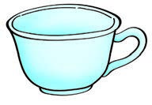
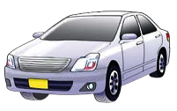
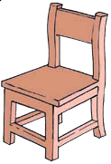
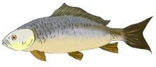
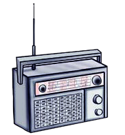
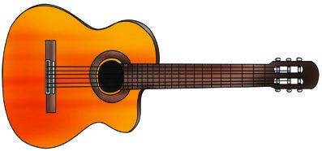
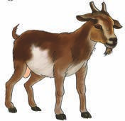
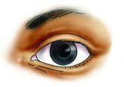

Exercise 6: Name pictures - part 1
Write or sign the names of the following things in your exercise book.
4.

A picture of a small cup with an open round top and one handle on the side.5.
 A picture of One smooth oval egg.
A picture of One smooth oval egg.6.

A picture of a side-view car with four doors, windows, and two visible wheels.7.

A picture of a chair with a seat, a straight back, and four legs.8.

A picture of a side-view fish with an eye, fins, and a tail.9.

A picture of a rectangular radio with a speaker, tuning controls, and an aerial.10.

A picture of a guitar with a rounded wooden body, a long neck, strings, and tuning pegs.11.

A picture of a goat standing on four legs with horns, ears, and a short tail.12.

A picture of One human eye with an eyelid, iris, pupil, and eyelashes.